| On the view windows, the point light looks like this: | 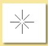 |
| The
point light dialogue box is shown on the right: Click on the Color box the alter the light's colour. This brings up a dialogue allowing Hue/Saturation/Value (HSV), Red/Green/Blue (RGB) or Hue/Lightness/Saturation (HLS) values to be set to define the light colour. The Intensity, I0, of the light is simply how bright it is. By default, this set to 1. The intensity of this light at any point in space, I(r), is a function of this value, the Decay Rate, d, and the distance from the light source, r as follows: I(r)= I0/(1+dr+(dr)2) Close to the light (r<<1/d) the intensity is approximately constant. Far from the light (r>>1/d), it follows an inverse square law (i.e. decays as 1/r^2) as shown in the plot below for a range of decay rates: |
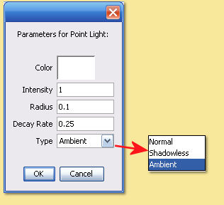 |
| 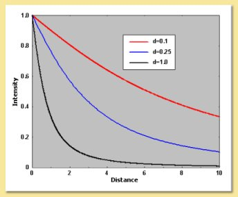 | The Intensity
of a light source can be negative. In this case, it becomes a source of
'darkness' which,
although physically unrealistic, can be a useful effect. The Decay Rate defines the drop off in the intensity of the light per unit distance from the light. A high value means that the light will be bright only very near to the light source, while a small value means it only drops off a little. A value of 0 causes the light to be the same brightness everywhere. The Radius defines the physical size of the light. This only has an effect if Soft Shadows are switched on when rendering with the Raytracer. Increasing the radius has the effect of making shadows softer at their edges. |
| 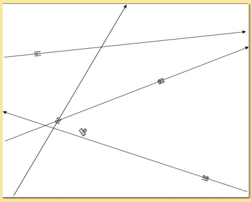 | Directional
lights are useful for simulating light sources which are far away, the
most obvious example being the sun. Light from the sun is virtually
parallel because of the tiny angle subtended even across the whole
Earth's diameter. Also intensity does not drop off over noticeably as
the Earth's diameter is small compared with the distance the light has
already travelled. To create a directional light, either click on the light icon and then click its position on a viewport and drag in the required direction (if you do not drag, you will end up with a point light), or select Object -> Create Primitive -> Directional Light and enter the position and orientation as prompted. |
| Because
of their inherent simplicity, the editing dialogue box brought up by
double-clicking the light on the Object List or via the Edit
menu, allows only 2 parameters to be specified: Color - allows the light's colour to be specified with the usual 3 HSV/RGB/HLS bars. Intensity - allows the brightness to be specified. This value is independent of position. Angular Radius defines the physical size of the light. This only has an effect if Soft Shadows are switched on when rendering with the Raytracer. Increasing the angular radius has the effect of making shadows softer at their edges.
Type
is as defined above for point lights. |
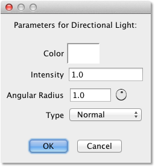 |
| Spotlights
look like this when displayed in the view windows: This clearly shows the orientation of the emitted light beam. |
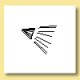 |
| Once
created, spotlights can be edited either by double-clicking on the
light in the Object List or be selecting the object and clicking on
Edit -> Edit Object. This brings up a dialogue box like this: Cone angle is the extent of the beam spread. A small value produces a narrow beam. Falloff rate defines how quickly the light fades as we move radially outwards from the centre of the beam. A value of 0 means there is no falloff and the light will therefore be of uniform intensity right to the edge of the beam beyond which it will be zero. Radius is the physical size of the light which affects rendering with soft shadows switched on (see Rendering). Color, Intensity, Decay Rate and Type are as defined for Point Lights. |
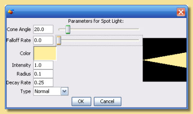 |
To create a procedural light, select Object -> Create Primitive -> Procedural Point Light or Object -> Create Primitive -> Procedural Directional Light. The difference between the two is what direction the light rays travel in. For a point light, they travel outward from the location of the light. For a directional light, they are all parallel to each other.
Having created the light, it can be edited either by double-clicking on it in the Object List or by selecting it and clicking on Edit -> Edit Object. The window that appears will look something like this:
| 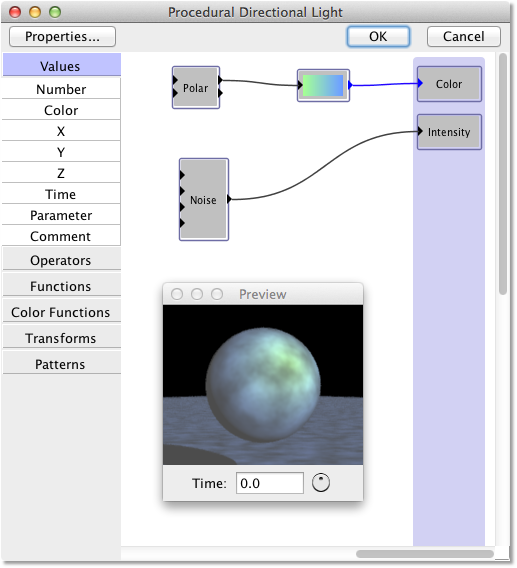 |
This is a procedure editor. The 'Color' and 'Intensity' boxes on the right
are the properties of the light at a point in space: its color and its intensity.
You get to define exactly how those properties should be calculated. You do this
by creating a mathematical procedure that takes the x, y, and z coordinates of a
point in space (defined in the light object's local coordinate system), and computes
the color and intensity at that point. See the section on
procedural textures to learn how to create procedures.
Click the Properties... button to edit the light's other properties: its radius (for a point light) or angular radius (for a directional light) and type. These have exactly the same meaning as for regular point and directional lights.
|
For ordinary directional lights, it doesn't matter where you put the light in the scene, because it produces the same light everywhere. That isn't necessarily true for procedural directional lights: you can create a procedure that makes the light color and intensity vary with position. In that case, it does matter where you put the light.
There are no "procedural spot lights", because you don't need them. Just use a procedural point light, then create a procedure that makes its brightness vary with angle:
| 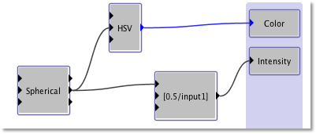 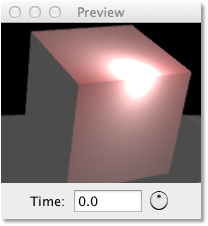 |
Procedural lights are especially useful for creating 'non-physical' lighting effects that could never be created by real lights. This isn't realistic, of course, but it can be very useful for artistic effect.
Be careful when using procedural lights with photon mapping (described
here). Photon mapping assumes a physically
accurate lighting model. If you use it with a non-realistic procedural light,
the results can be unpredictable and usually are not what you want.
3.5 Lighting Effects
3.5.1 Realistic Light Sources
Like most, if not all, 3D graphics packages, the light sources in Art
of Illusion are themselves
not actually visible. If you point the camera at a light source and
render the view, there will not
be a bright area where the light source is. Lights are only visible in
the way they interact with
objects around them. In most cases, this is useful as lights can be
positioned anywhere in the scene without having to worry about them
being visible as is the case in real life.
Sometimes, however, it is desirable to replicate real life sources. To
simulate a realistic light
source requires 2 qualities: (i) the object needs to give out light
that reacts realistically with
its surroundings and (ii) the object needs to 'glow'. In real life,
these qualities are manifestations
of the same physical feature but they are quite different in 3D
graphics.
| The first thing to do is to create the object you want to represent the light source. The image on the right is an example of a 'bulb' which was created by applying the lathe tool to a curve. The rendered image shows the bulb 'turned off'. | 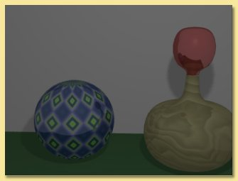 |
| To
make it into a light source, we need to put a light source inside it.
The point light source is
the best type for this purpose. Having positioned the light in the
bulb, you will need to make the bulb
transparent so that the light can escape and, thus, interact with its
surroundings. Alter the transparency
in the texture to
achieve this. The light will now shine out from the object but the object itself will not 'glow' and so will not look realistic. To get this effect, add some emissive colour to the object. Alter the diffuse and emissive colours to get the right effect and make sure the overall colour matches that from the light. The image on the right shows the results of these changes. Note that 'soft shadows' had to be switched on otherwise artefacts can appear when light sources are placed inside objects. |
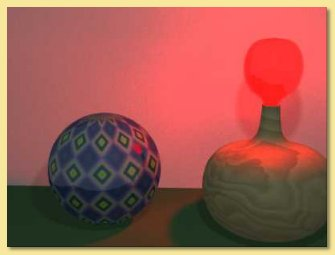 |
| Another example of 'realistic' lighting is shown on the right. The 'lights' are cylinders with point light sources positioned within: | 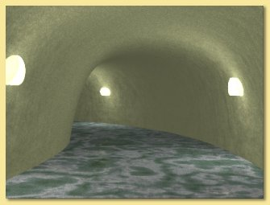 |
| 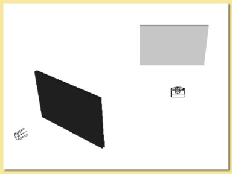 perspective view of set up for 'cookie' scene. The screen on the left has the cookie image set for a transparency map and is projected onto right hand screen at which camera is pointing. |
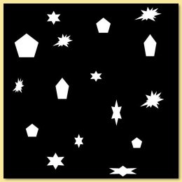 binary image map created in 2D graphics program. |